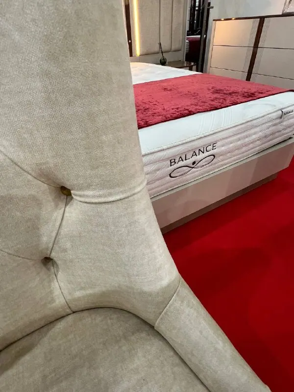

Красная дорожка, цветы, новые коллекции и особенная атмосфера праздника! Сегодня в «Крокус Экспо» открылась выставка «Мебель», и «Мебель Фортэ» уже встречает первых гостей. • 23–26 ноября • МВЦ «Крокус Экспо», павильон 3, зал 15, стенд 15B030 • Билеты — https://www.meb-expo.ru/ru/visitors/ticket/?step=step1 К этому событию мы подготовились…
Мебель ФортэО выставке

Альбом · 6